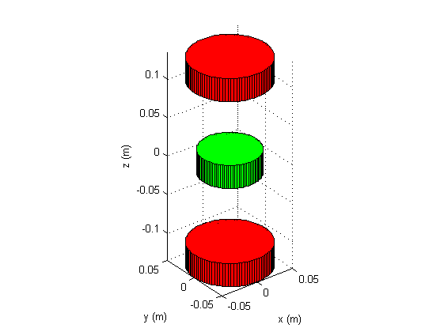
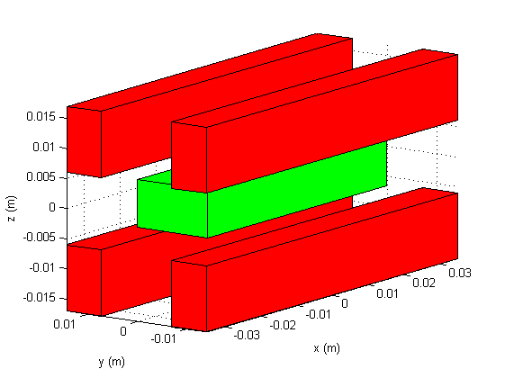

Calculating the forces between magnets using MATLAB
Jump to:
The function magnetforces is used to calculate forces and stiffnesses between either cuboid or cylindrical magnets. The calculation of the force between cuboidal magnets is done by using the method described by Gilles Akoun and Jean-Paul Yonnet [1]. The forces for cylindrical magnets are calculated by using several methods depending on the situation.
Force between cuboidal magnets
Parallel magnetized magnets
The calculation of the forces between two cubical magnets is done according to the method of Akoun and Yonnet. They characterize the force with the following equation:
.gif)
Where J and J’ indicate the magnetizations of the first and second magnet respectively. The function (φ) differs per direction in the Cartesian coordinate system and is dependend on the geometrical parameters.
Perpendicular magnetized magnets
The calcalation of the forces between magnets that are magnetized in perpendical directions is based on the theory elaborated by H. Allag et. al. [2] and J.L.G. Janssen et. al. [3].
Force between cylindrical magnets
Coaxial magnets
The forces between coaxial cylindrical magnets are calculated by using the simplified force equation as described by Will Robertson [4]. The expression for this equation is:
.gif)
Cylindrical magnets with an offset
In order to calculate the forces for cylindrical magnets that have an offset in the direction perpendicular to their magnetized direction, the theory of John. T. Conway [5] is used. This method uses Bessel functions in order to calculate these forces.
Sources
[1] Akoun, G. and Yonnet, J. (1984). 3D analytical calculation of the forces exerted between two cuboidal magnets. IEEE Transactions on Magnetics, 20(5), pp.1962-1964.
[2] Allag, H., Yonnet, J., Fassenet, M. and Latreche, M. (2009). 3D Analytical Calculation of Interactions Between Perpendicularly Magnetized Magnets—Application to Any Magnetization Direction. Sensor Letters, 7(3), pp.486-491.
[3] Janssen, J., Paulides, J., Lomonova, E., Bölöni, F., Tounzi, A. and Piriou, F. (2009). Analytical Calculation of Interaction Force Between Orthogonally Magnetized Permanent Magnets. Sensor Letters, 7(3), pp.442-445.
[4] Robertson, W., Cazzolato, B. and Zander, A. (2011). A Simplified Force Equation for Coaxial Cylindrical Magnets and Thin Coils. IEEE Transactions on Magnetics, 47(8), pp.2045-2049.
[5] Conway, J. (2013). Forces Between Thin Coils With Parallel Axes Using Bessel Functions. IEEE Transactions on Magnetics, 49(9), pp.5028-5034.
The syntax of the function is as follows:
F = magnetforces(magnet_fixed, magnet_float, displ);
F = magnetforces(magnet_fixed, magnet_float, displ, 'force');
K = magnetforces(magnet_fixed, magnet_float, displ, 'stiffness');
T = magnetforces(magnet_fixed, magnet_float, displ, 'torque');
[F K T] = magnetforces(magnet_fixed, magnet_float, displ,...
'force', 'stiffness', 'torque');
The input parameters 'magnet_fixed' and 'magnet_float' are structures that defines the grade, dimension and magnetized direction of the fixed magnet and floating magnet respectively. The parameter 'displ' is a (3xD) matrix, in which D indicates the number of displacements over which the forces are calculated.
Note: the stiffness and torque calculations are still under development and thus not usable yet in this function.
Let us consider a system with two repelling magnets; one fixed and one floating magnet.
The force acting on the floating magnet can now be calculated by using the magnetforces MATLAB function. The function can be applied as follows:
% Set geometrical parameters
w = 0.05; h = 0.05; d = 0.05;
N = linspace(h,3*h,50);
% Define the magnet parameters
size1 = [w h d];
grade1 = 'N35';
size2 = [w h d];
grade2 = 'N35';
% Define magnet structures
magnet_fixed = struct('grade',grade1,'dim',size1,'magdir',[0 1 0]);
magnet_float = struct('grade',grade2,'dim',size2,'magdir',[0 -1 0]);
% Create the displacement matrix
displ = N'*[0 1 0];
% Calculate the magnet forces
F = magnetforces(magnet_fixed, magnet_float, displ);
% Plot forces
plot(1000*N,F(2,:))
xlabel('N (mm)'); ylabel('F (N)');
Which produces the following figure:
This function calculates the force between cuboidal magnets using the theorem described in the paper of Will Robertson.
The function multimagnetforces is used to calculate the total forces acting on a floating magnet while using an arbitrary number of fixed magnets.
The function multimagnetforces can be used as follows:
F = magnetforces(magnet_float, displ, magnet_fixed, pos);
Similar inputs as in the magnetforces function are used. However, now magnet_fixed is an array of structures and there is an additional variable called 'pos' which is a matrix of size nx3 indicating the positions of all the fixed magnets with respect to the floating magnet.
As an example, a simple cylindrical levitation system is considered. A visualisation of the system can be found in figure 3. The function multimagnetforces can be used in MATLAB as follows:
% Set geometrical parameters
r1 = 0.050;
h1 = 0.030;
grade1 = 'N35';
r2 = 0.050;
h2 = 0.030;
grade2 = 'N35';
rf = 0.075/2;
hf = 0.030;
gradef = 'N42';
pos1 = [0 0 0.12];
pos2 = [0 0 -0.12];
% Define magnet structures
magnets_fixed(1) =
struct('grade',grade1,'dim',[r1 h1],'magdir',[0 0 1]);
magnets_fixed(2) =
struct('grade',grade2,'dim',[r2 h2],'magdir',[0 0 -1]);
magnet_float =
struct('grade',gradef,'dim',[rf hf],'magdir',[0 0 -1]);
% Define displacements & positions
displ = linspace(-0.002,0.002,50);
displ = displ'*[0 0 1];
pos = [pos1;pos2];
% Calculate forces
F = multimagnetforces(magnet_float, displ, magnets_fixed, pos);


Function drawmagnets plots a 3D visualization of the magnets used in multimagnetforces. The floating magnet is shown in a green color, the fixed magnets are shown in a red color.